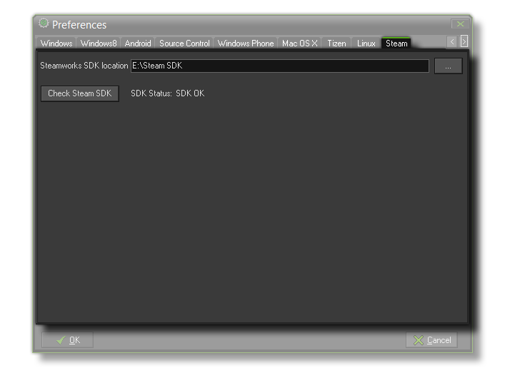

From this tab you can point GameMaker: Studio to the version of the Steamworks SDK that you have installed on your development machine. This SDK will only be available to you from the Steam Developer
Area, meaning that your game must have been approved for Steam previously to use this (either through a publisher or through the Greenlight system).
Once you have directed GameMaker: Studio to the Steamworks SDK, you should then click the Check Steam SDK button to ensure that GameMaker: Studio can communicate correctly
with the necessary SDK components. If everything is correct, you should see "OK" displayed.